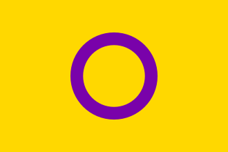

O QUE É
INTERSEXO ?
Intersexo é um termo guarda-chuva usado para descrever pessoas que nascem com características biológicas sexuais — como a anatomia reprodutiva, órgãos genitais, hormonais ou padrões cromossômicos — que não se enquadram nas definições típicas para corpos masculinos ou femininos.
Diferente do que muitos pensam, não se trata de uma orientação sexual (por quem a pessoa sente atração) e nem de uma identidade de gênero (como ela se sente em relação a ser homem, mulher ou não binário). O intersexo diz respeito estritamente à biologia e à anatomia do corpo. Uma pessoa intersexo pode ter qualquer orientação sexual e qualquer identidade de gênero.
